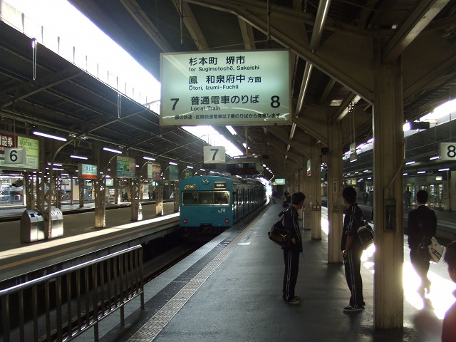
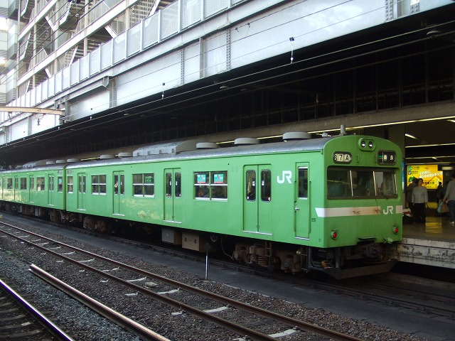
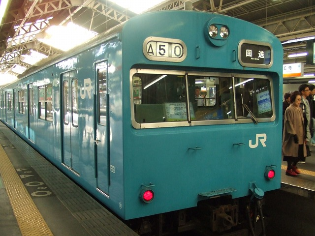
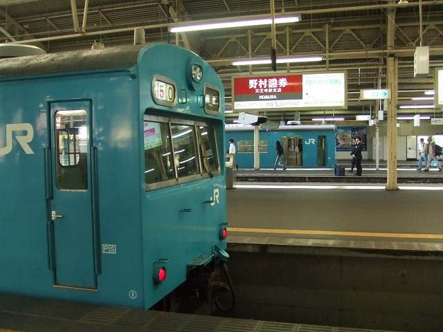

「題名：だから環状線は特別なの！by 北京」の言葉が私を操ります。
尼ヲタおすすめの手のひらサイズカメラなら怖いものがなくなってきました。
どこでカメラ構えてんだよ私

環状線ホームから改札に向かう途中。阪和線ホームをみて旦那が叫びました。
「おい、１だ、１！」
何故か走り出す妻。

ああああ、遠くなっていく103-1。
振り返ると旦那満面ニタニタ大笑い「お前何走ってんだよ（笑）」
あんたの言葉で走ったんだよ！！他人事かい！！（土曜日の朝7:30でした）
この日の他の成果はこんなもん。

環状線の向かいホーム

103-1の後にきたやつ（どや、端っこ切れてないやろ）

これは旦那撮影。なるほどこういう駅の風景入ってるほうが楽しいな。
最近環状線乗るときはカメラが臨戦態勢だ。アホかあたしゃ。